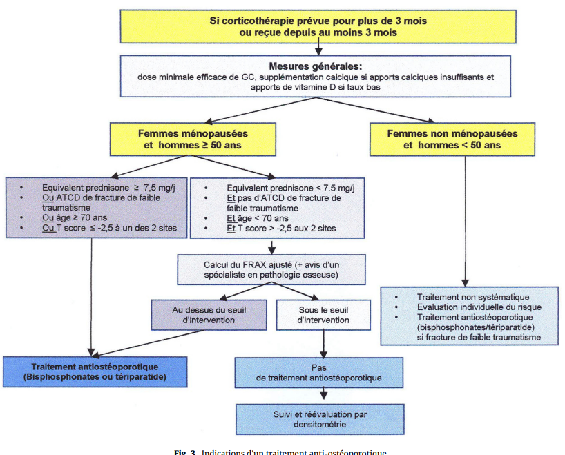
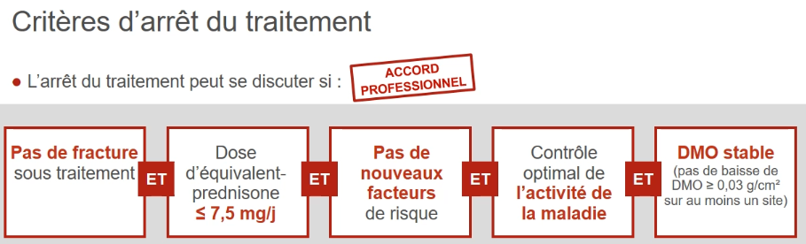

Bilan à l'initiation d'une probable corticothérapie prolongée
Prévention de l'ostéoporose cortico-induite :
- Autres facteurs de risques :
- ! Le plus important = Fractures personnelles ostéoporotiques !
- ATCD de fracture de fragilité du col fémoral chez un parent du premier degré
- Âge > 60 ans
- Immobilisation prolongée
- Tabagisme, alcoolisme
- Ménopause précoce (< 40 ans)
- IMC < 19
- Endocrinopathie : Hyperthyroïdie, Hyperparathyroïdie, orchidectomie, ovariectomie, hypercorticisme
- Médicaments : Corticothérapie au long cours, diurétiques hypercalciuriants (de l'anse), anti-oestrogène, anti androgène, anti-aromatase
- Carence en vitamine D
- Risque de chute
- Ostéodensitométrie à réaliser à la sortie
- Dépistage des fractures vertébrales : perte de au moins 4cm par rapport à la taille de 20 ans
- Eliminer autres ostéopathies fragilisantes (bilan bio)
- Dosage de la vitamine D, objectif 30 ng/mL
- DMO à faire pour tout le monde, mais insuffisante pour prédire le risque de fracture
- FRAX (sauf si indication évidente de traitement, et sauf si patiente non ménopausée ou homme < 50 ans car pas validé dans ces populations) :
- Utiliser le même seuil d'intervention thérapeutique que les femmes de même âge ayant eu une fracture
- Questionnaire des apports calciques GRIO : Apports calciques suffisants (800-1200mg par jour soir 4 produits laitiers)
- Durée de traitement = 2 ans pour les biphosphonates et 18 mois pour le teriparatide car remboursé 18 mois et AMM 24 mois
- Teriparatide en 1ère intention si entre dans l'AMM (2 fractures) car marche mieux
Prévention des complications cardiovasculaires et du diabète :
- Facteurs de risque cardiovasculaires : Poids, IMC, tension, glycémie à jeun,hbA1c, bilan lipidique, tabagisme.
- ECG (si FDR cardiovasculaires) :
- SCORE 2
- Correction de ces FDRs
Prévention des complications infectieuses :
- Recherche de foyer infectieux :
- Vaccination grippe, pneumocoque, ZONA (SHINGRIX), MAJ du calendrier vaccinal
- ! contre indication aux vaccins vivants atténués si dose > 10mg/j = VZV non SHINGRIX, BCG, fièvre jaune,..
- IGRA si contact avec TM non ou insuffisament traitée
- Sérologies hépatiques :
- Radiographie pulmonaire :
- traitement antiparasitaire pour tout patient ayant séjourné dans une zone endemique d'anguillulose maligne= régions tropicales et subtropicales, certaines zones d’Europe du Sud, notamment au Portugal
Prévention des complications digestives :
- Antécédent d'ulcère ?
- ATCDs hépatiques ?
Prévention des complications psychiatriques :
Education thérapeutique :
- Conseils concernant l'activité physique
- Conseils diététiques : restriction d'apports sucres rapides, limitation sel, apports protidiques et calciques suffisants, supplémentation potassique si nécessaire
- +/- consult diet
- Arrêt du tabagisme

